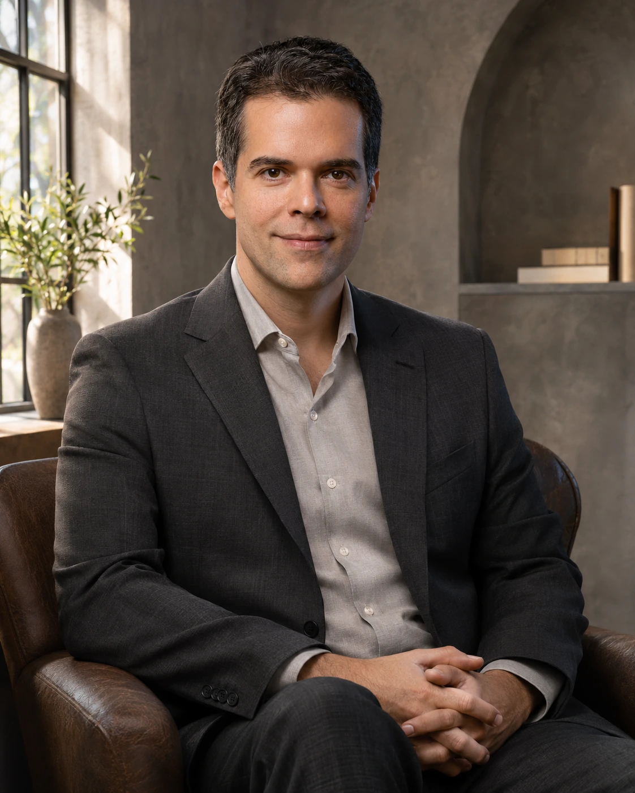
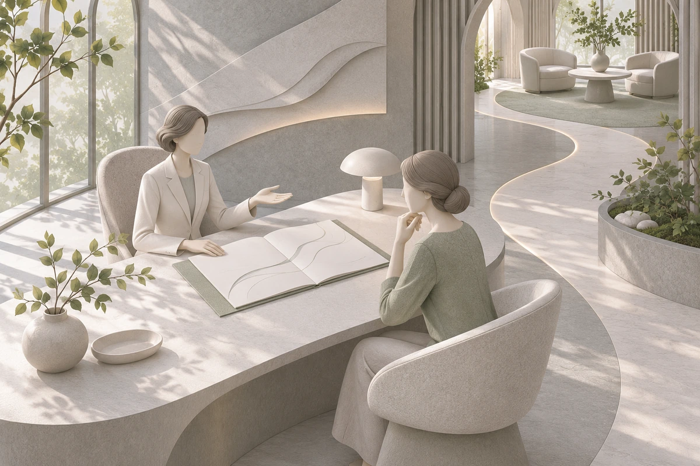

Contorno abdominal
Converse sobre o abdômen, sobre as opções e sobre os limites de cada abordagem.

Na consulta, converse sobre as opções para seu caso, os riscos e o que esperar da recuperação.
Antes de escolher um procedimento, reserve espaço para compreender o caminho completo.
Organizar minha avaliaçãoConverse sobre seus objetivos, as alternativas e os limites de cada abordagem para seu caso.
Leve perguntas sobre riscos, preparo, equipe, local da cirurgia e o que precisa ser avaliado antes de decidir.
Pergunte sobre retornos, apoio em casa e organização do trabalho. O planejamento também inclui o período depois da cirurgia.

Converse sobre o abdômen, sobre as opções e sobre os limites de cada abordagem.
Tire dúvidas sobre indicação, cicatrizes e recuperação.
Entenda quais perguntas levar à avaliação sobre técnica, indicação e acompanhamento.
Indicações, alternativas e próximos passos são conversados na consulta.
Conhecer o atendimentoCompartilhe seu histórico e o que motivou a avaliação.
Converse sobre riscos, alternativas, local e preparo.
Entenda as etapas do pós-operatório e os retornos previstos.
Cirurgião plástico em Goiânia. O perfil profissional destaca cirurgia das mamas e procedimentos de contorno corporal.
Rodrigo Gomide de Souza Andrade · Médico · CRM-GO 12087 · RQE 6176
Identificação profissional informada nas fontes consultadas.
Reels publicados no perfil profissional.
O canal divulgado no Instagram conecta você à equipe para consultar horários de avaliação.
A decisão exige avaliação médica individual. Use o canal de atendimento para organizar a consulta.
Sim. Leve suas dúvidas sobre atividades, repouso, retornos e cicatrizes.
Consulte a ficha no mapa e valide o endereço com a equipe ao agendar.